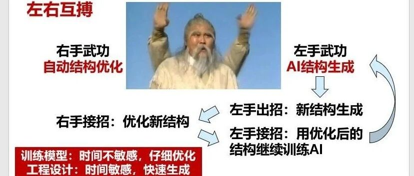

左右互搏大法 | 新论文及发明专利：基于结构优化和半监督学习方法提升AI设计效果

论文：Semi-supervised learning method incorporating structural optimization for shear-wall structure design using small and long-tailed datasets
DOI：10.1016/j.jobe.2023.107873
发明专利：基于联合结构优化神经网络的建筑结构设计方法和装置
专利号：ZL202210444464.6
5分钟视频介绍：
0
太长不看版
结构设计数据存在长尾分布现象，即某些类型的数据非常缺乏，称为尾部数据（比如大家一般不太会遇到9度区的工程）。AI在尾部数据上无法得到充分训练，因此性能较差。
我们提出了一种半监督学习方法，利用生成式AI来增加尾部数据的数量，利用结构优化算法来提升尾部数据的质量，最后再让AI重新学习这些经过优化的尾部数据。经过这套“左右互搏大法”之后，AI在尾部数据上的性能得到了有效提升。

1
引言
我们团队之所以对结构的智能设计抱有极大的兴趣，是因为我们认为结构智能设计具备很大的发展空间。特别是结构设计相对是一个规则比较明确的任务，即设计结果的安全性可以通过各种规范条文来检验，设计结果的经济性可以通过材料用量来检验，因此AI除了可以被动地去学习人类的已有设计经验，还可以进一步主动去不断生成新的设计结果，并自主检验不同设计结果的合理性和经济性，从而不断提升自己的设计能力。
《射雕英雄传》里面有一个很独特的武功，老顽童周伯通在桃花岛上孤独一人，穷极无聊，于是想出了“左右互搏”大法，左右手互相过招不断提升武功。
于是我们在结构AI设计里面可以参考这个思想。左手就是智能生成式AI，它不断学习并设计出新的结构方案。右手就是结构优化算法，它不断优化AI的设计结果。AI再去学习优化后的结果，迭代循环从而提升AI生成的新的结构方案的性能。如果这条路走通了，那AI就可以通过双手互搏实现提升设计功力的目标。由于AI生成式设计可以分秒完成方案设计，解决了传统优化算法计算量大难以满足工程进度的问题；又可以保证AI学习的始终是充分优化后的数据，从而不断提升AI的设计质量。

图1 左右互搏
按照这个思想，我们提出了基于结构优化的半监督学习方法，并将其用于剪力墙结构长尾数据的AI设计中，取得了较好的设计效果。
2
长尾分布
AI学习的好坏往往和学习的数据量密切相关。如果把收集到的众多数据进行分组，就会发现大部分数据集中在常见参数范围内，而对于一些不常见的参数范围，则可以收集到的数据会非常有限。比如我们要收集同学们的身高数据并按照10 cm一组进行分组，我们就会发现，无论我们收集了全清华的学生数据，还是收集了全北京的学生数据，或者全国的学生数据，150~160cm、160~170cm、170~180cm这几组永远是最多的。而200~210cm、210~220cm这些分组的数据总是很稀少的，这就是长尾数据。
我们收集到的建筑设计数据也有类似的特点，这样一来，如果我们要设计的目标建筑正好落在长尾数据区，就可能因为数据量的不足导致AI学习的设计效果不够好。

图2 结构设计任务面临的长尾分布问题
从研究的角度，为了把问题说清楚，我们选择了一个比较简单的数据集，构建了下图所示的长尾数据集。将地震影响系数α划分为4个类别：S1(0≤α<0.15), S2(0.15≤α<0.30), S3(0.30≤α<0.45), S4(0.45≤α<0.90)。将建筑高度H也划分为4个类别：H1(0≤H<40 m), H2(40≤H<60 m), H3(60≤H<80 m), H4(80≤H<100 m)。
显然，中等烈度区（S2、S3）中等高度（H2、H3）的建筑数据是比较丰富的，是所谓的“头部数据”。而低烈度或者高烈度区和高度低于40m或超过80m的数据都是比较少的，形成了“尾部数据”。

图3 含头部数据和尾部数据的训练数据集
3
左手武功：StructGAN-TXT
我们选择了在小样本上表现较好的StructGAN-TXT算法来学习图3中的数据（StructGAN-TXT算法详见：融合文本和图像数据的建筑结构AI设计方法）。用设计结果和工程师之间的差别作为设计效果好坏的评判依据，评测结果参见表1。
显然，头部情况由于训练数据比较充足，所以设计得分较高；而尾部情况因为训练数据比较少，所以设计得分较低。训练数据充足与否对设计质量有明显影响。

4
右手武功：优化算法
本研究提出了一种基于两阶段评估策略和经验规则的优化算法。
对AI设计的结果，首先开展基于经验规则的第一阶段评估，分析AI设计的剪力墙的墙率、扭转半径和楼板支撑面积等宏观指标是否合格。宏观指标合格的AI设计结果，进入第二阶段基于有限元分析的评估，计算结构的层间位移角以及材料用量。然后，用层间位移角作为约束函数，用材料用量作为目标函数，用遗传算法进行结构优化。这里感谢YJK-GAMA提供的参数化建模和优化算法支持。

图4 基于两阶段评估策略和经验规则的优化算法
5
左右互搏与半监督学习
于是我们建议了图5所示的左右互搏和半监督学习流程。
模块1：左手起势，StructGAN-TXT在长尾数据集上完成训练，形成AI设计模型SL（Small and Long-tailed）。
模块2：左手出招，用训练好的模型SL进行长尾条件下的结构设计，当然这时模型SL由于训练数据过少，设计结果比较差。
模块3：右手应招，优化算法对模型SL设计的糟糕结果进行优化，形成满足设计要求的新结果。
模块4：左手接招，将训练好的数据集和此前的长尾数据集进行混合，形成均衡的数据集，继续训练得到新的AI设计模型SB（Small and Balanced）。
模块5&6：左手再出招，用模型SB完成更大规模设计案例，然后将所有设计案例汇集起来，训练得到终极AI设计模型LB（Large and Balanced）。

图5 左右互搏和半监督学习流程
6
效果分析
说了半天，到底效果怎么样呢？我们可以看看表2。
表2显示，最初的AI设计模型（模型SL）由于存在长尾部分训练数据不足的问题，头部设计条件和尾部设计条件得分差异显著。而经过优化算法改进后，头部和尾部设计条件下得分都有提升，且尾部设计条件下提升尤为明显（从0.385提升到了0.420）。再经过一次半监督学习后，尾部设计条件得分进一步提升，且所有条件下的总分也得到了提高（从0.446提高到了0.452）。可见，利用优化算法改善AI设计结果的收效是明显的。

考虑到得分计算不够直观，我们用一个具体的工程例子来进行对比。某剪力墙建筑分别由工程师和AI来做设计，结果对比如图6和表3所示。可以看出，在长尾设计条件下，因为训练数据不足，模型SL不满足规范。而采用本文方法优化并扩充数据集后，模型LB不仅满足规范，且混凝土用量还略低于工程师设计结果，体现出本方法良好的效果。

图6 典型案例的设计结果 (a) 模型SL; (b) 模型LB.

7
结语
本研究是将生成式AI与结构优化相结合的一次初步尝试，尚存在诸多不足，欢迎各位专家批评指正！
联络邮箱:
ai-structure.com联系方式
QQ群，AI-structure-交流群：741840451
AIstructure-Copilot-v0.1.2更新：精细化考虑抗震设计条件影响的全新GNN版本，请您来试试(20230928)
ai-structure.com：剪力墙结构材料用量AI预测模块上线测试(20230731)
AIstructure-Copilot：嵌入CAD平台的结构智能设计助手(20230711)
建筑结构生成式智能设计在日内瓦国际发明展上获“评审团特别嘉许金奖”(20230519)
ai-structure.com：土木工程自然语言规则AI解译模块上线测试(20230513)
AI剪力墙设计问卷调查结果(20230508)
相关论文
Liao WJ, Lu XZ, Huang YL, Zheng Z, Lin YQ, Automated structural design of shear wall residential buildings using generative adversarial networks, Automation in Construction, 2021, 132, 103931. DOI: 10.1016/j.autcon.2021.103931.
Lu XZ, Liao WJ, Zhang Y, Huang YL, Intelligent structural design of shear wall residence using physics-enhanced generative adversarial networks, Earthquake Engineering & Structural Dynamics, 2022, 51(7): 1657-1676. DOI: 10.1002/eqe.3632.
Zhao PJ, Liao WJ, Xue HJ, Lu XZ, Intelligent design method for beam and slab of shear wall structure based on deep learning, Journal of Building Engineering, 2022, 57: 104838. DOI: 10.1016/j.jobe.2022.104838.
Liao WJ, Huang YL, Zheng Z, Lu XZ, Intelligent generative structural design method for shear-wall building based on “fused-text-image-to-image” generative adversarial networks, Expert Systems with Applications, 2022, 118530, DOI: 10.1016/j.eswa.2022.118530.
Fei YF, Liao WJ, Zhang S, Yin PF, Han B, Zhao PJ, Chen XY, Lu XZ, Integrated schematic design method for shear wall structures: a practical application of generative adversarial networks, Buildings, 2022, 12(9): 1295. DOI: 10.3390/buildings1209129.
Fei YF, Liao WJ, Huang YL, Lu XZ, Knowledge-enhanced generative adversarial networks for schematic design of framed tube structures, Automation in Construction, 2022, 144: 104619. DOI: 10.1016/j.autcon.2022.104619.
Zhao PJ, Liao WJ, Huang YL, Lu XZ, Intelligent design of shear wall layout based on attention-enhanced generative adversarial network, Engineering Structures, 2023, 274, 115170. DOI: 10.1016/j.engstruct.2022.115170.
Zhao PJ, Liao WJ, Huang YL, Lu XZ, Intelligent beam layout design for frame structure based on graph neural networks, Journal of Building Engineering, 2023, 63, Part A: 105499. DOI: 10.1016/j.jobe.2022.105499.
Zhao PJ, Liao WJ, Huang YL, Lu XZ, Intelligent design of shear wall layout based on graph neural networks, Advanced Engineering Informatics, 2023, 55, 101886, DOI: 10.1016/j.aei.2023.101886
Liao WJ, Wang XY, Fei YF, Huang YL, Xie LL, Lu XZ*, Base-isolation design of shear wall structures using physics-rule-co-guided self-supervised generative adversarial networks, Earthquake Engineering & Structural Dynamics, 2023, DOI:10.1002/eqe.3862.
Feng YT, Fei YF, Lin YQ, Liao WJ, Lu XZ, Intelligent generative design for shear wall cross-sectional size using rule-Embedded generative adversarial network, Journal of Structural Engineering-ASCE, 2023, 149(11). 04023161. DOI:10.1061/JSENDH.STENG-12206.
Fei YF, Liao WJ, Lu XZ*, Guan H*, Knowledge-enhanced graph neural networks for construction material quantity estimation of reinforced concrete buildings, Computer-Aided Civil and Infrastructure Engineering, 2023, DOI: 10.1111/mice.13094.
Zhao PJ, Fei YF, Huang YL, Feng YT, Liao WJ, Lu XZ*, Design-condition-informed shear wall layout design based on graph neural networks, Advanced Engineering Informatics, 2023, 58: 102190. DOI: 10.1016/j.aei.2023.102190.
Fei YF, Liao WJ, Lu XZ*, Taciroglu E, Guan H, Semi-supervised learning method incorporating structural optimization for shear-wall structure design using small and long-tailed datasets, Journal of Building Engineering, 2023, DOI：10.1016/j.jobe.2023.107873

学术报告视频
公众号文章
---End--